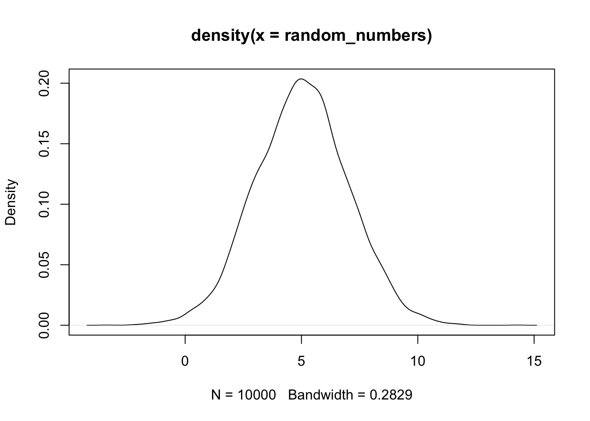
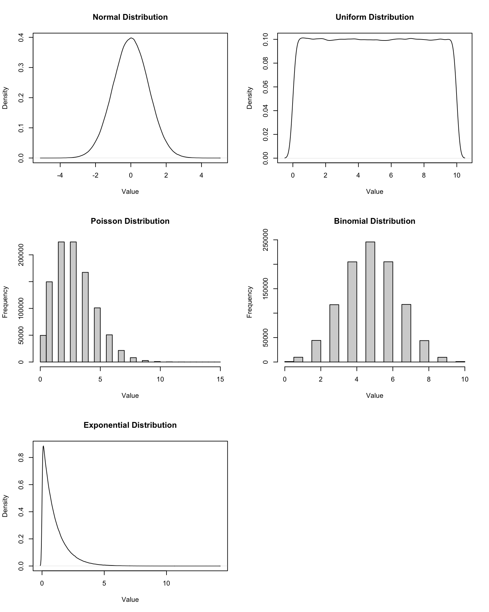

19 Random Numbers and Probability Distributions
This worksheet focuses on the use of functions in the stats package (base R) related to standard probability distributions. These functions come in four groups, each with a different prefix:
d: Density function (probability mass function for discrete distributions)p: Cumulative distribution functionq: Quantile functionr: Random generation function
For example, for the normal distribution, the functions are:
dnorm(): Density functionpnorm(): Cumulative distribution functionqnorm(): Quantile functionrnorm(): Random value generation function
See ?Distributions for the full list of distributions and their corresponding function names.
19.1 Generating Random Numbers
The r functions generate random numbers from a specified distribution. The general syntax is:
r<distribution>(n, parameters)
Where n is the number of random numbers to generate, and parameters are the specific parameters of the distribution (e.g., mean and standard deviation for normal distribution). For example, to generate 10,000 random numbers from a normal distribution with mean 5 and standard deviation 2:
It is computationally more efficient to generate random numbers in batches rather than one at a time with a loop:
size <- 100000
# Generating random numbers one at a time (inefficient)
time_single <- system.time({
random_numbers_single <- rep(0, size)
for (i in seq_along(random_numbers_single)) {
random_numbers_single[i] <- rnorm(1, mean = 5, sd = 2)
}
})
# Generating random numbers in a batch (efficient)
time_batch <- system.time({
random_numbers_batch <- rnorm(size, mean = 5, sd = 2)
})
# Compare the times
cat("Time for single generation:", time_single["elapsed"], "seconds\n")
cat("Time for batch generation:", time_batch["elapsed"], "seconds\n")
cat("Speed-up factor:", round(time_single["elapsed"] / time_batch["elapsed"], 1), "x\n")Time for single generation: 0.033 seconds
Time for batch generation: 0.001 seconds
Speed-up factor: 33 x19.2 Relation between the four groups of functions
The four functions are interrelated:
- The cumulative distribution function (
p) is the integral (or sum, for discrete distributions) of the density function (d). - The quantile function (
q) is the inverse of the cumulative distribution function (p). - The random generation function (
r) generates random samples based on the specified distribution. A random sample from theruniffunction can be transformed into a sample from any other distribution using the corresponding quantile function (q).
We can demonstrate these relationships with the normal distribution:
Code
set.seed(101)
# Parameters of our example normal distribution
size <- 1000
mu <- 5
sigma <- 2
# Generate random samples
samples <- rnorm(n = size, mean = mu, sd = sigma)
x_vals <- seq(mu - 3 * sigma, mu + 3 * sigma, length.out = size)
# Cal density, cumulative probabilities, and quantiles of this distribution
density_vals <- dnorm(x_vals, mean = mu, sd = sigma)
cum_probs <- pnorm(x_vals, mean = mu, sd = sigma)
quantiles <- qnorm(cum_probs, mean = mu, sd = sigma)
par(mfrow = c(2, 2))
hist(
samples, breaks = 30, probability = TRUE,
main = "Histogram of samples from rnorm",
xlab = "Value (bins of values sampled from rnorm)"
)
lines(x_vals, density_vals, col = "blue", lwd = 2)
plot(
x_vals, density_vals, type = "l",
main = "Density Function (dnorm)",
xlab = "x_vals", ylab = "Density", col = "blue", lwd = 2
)
plot(
x_vals, cum_probs, type = "l",
main = "Cumulative Distribution Function (pnorm)",
xlab = "x", ylab = "Cumulative Probability", col = "green", lwd = 2
)
plot(
cum_probs, quantiles, type = "l",
main = "Quantile Function (qnorm)",
xlab = "Cumulative Probability",
ylab = "Quantile", col = "red", lwd = 2
)
19.3 Commonly used distributions
Here are some commonly used probability distributions along with their parameters:
- Normal:
rnorm(n, mean, sd)wheremeanis the average andsdis the standard deviation. Represent real-valued random variables whose distributions are not known to be non-normal. - Uniform:
runif(n, min, max)whereminandmaxdefine the range of the distribution. Represents a distribution where all outcomes are equally likely within the specified range. - Binomial:
rbinom(n, size, prob)wheresizeis the number of trials andprobis the probability of success on each trial. Represents the number of successes in a fixed number of independent Bernoulli trials. - Poisson:
rpois(n, lambda)wherelambdais the average rate (mean) of occurrence. Represents the number of events occurring within a fixed interval of time or space. - Exponential:
rexp(n, rate)whererateis the rate parameter (inverse of the mean). Represents the time between events in a Poisson process.
Code
num_samples <- 1e6
normal_samples <- rnorm(num_samples, mean = 0, sd = 1)
uniform_samples <- runif(num_samples, min = 0, max = 10)
poisson_samples <- rpois(num_samples, lambda = 3)
binomial_samples <- rbinom(num_samples, size = 10, prob = 0.5)
exponential_samples <- rexp(num_samples, rate = 1)
par(mfrow = c(3, 2))
plot(density(normal_samples), main = "Normal Distribution", xlab = "Value")
plot(density(uniform_samples), main = "Uniform Distribution", xlab = "Value")
hist(poisson_samples, main = "Poisson Distribution", xlab = "Value", breaks = 30)
hist(binomial_samples, main = "Binomial Distribution", xlab = "Value", breaks = 30)
plot(density(exponential_samples), main = "Exponential Distribution", xlab = "Value")